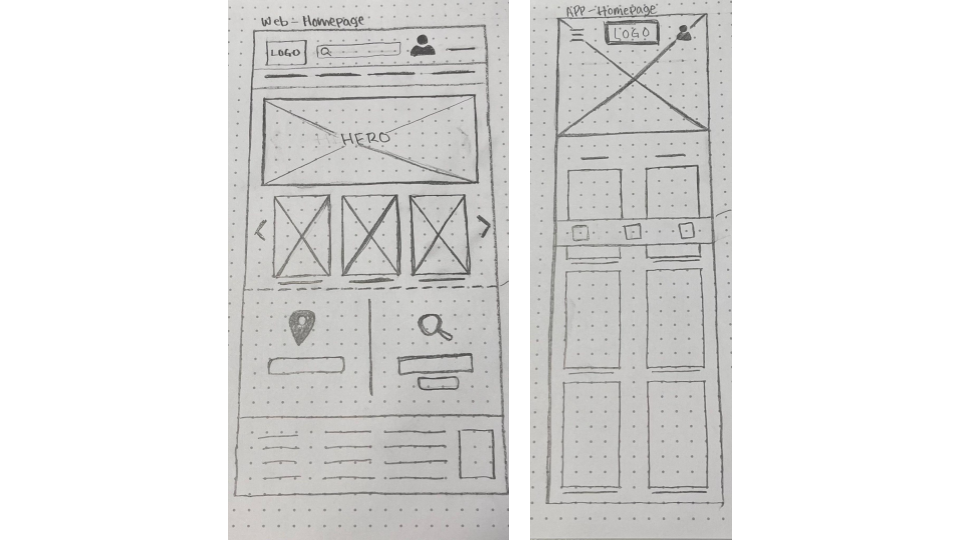
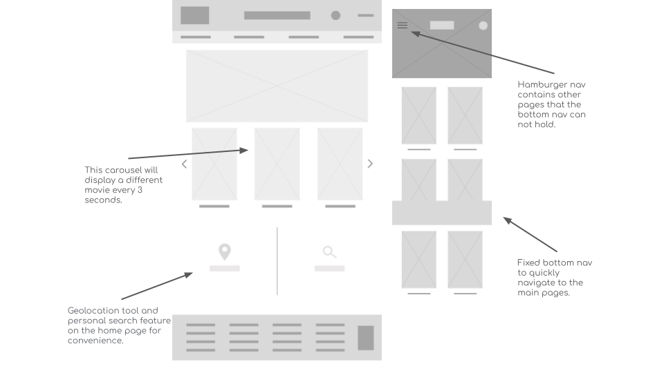
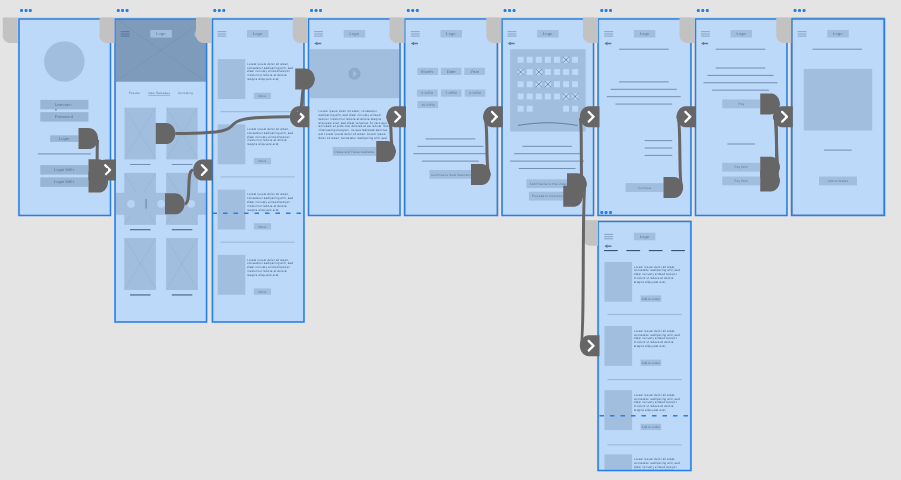
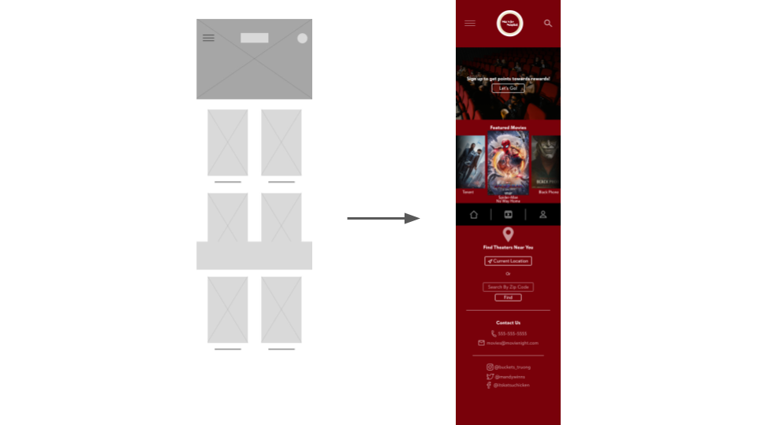
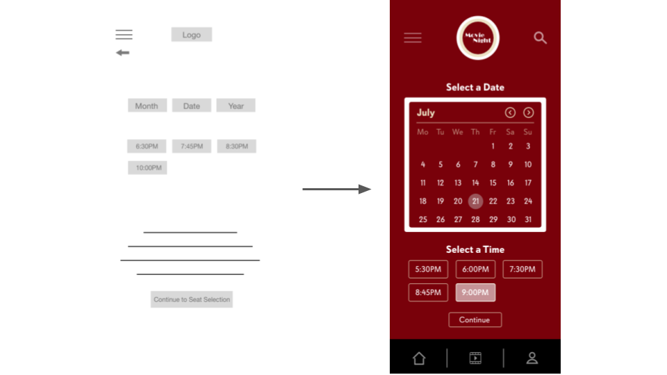
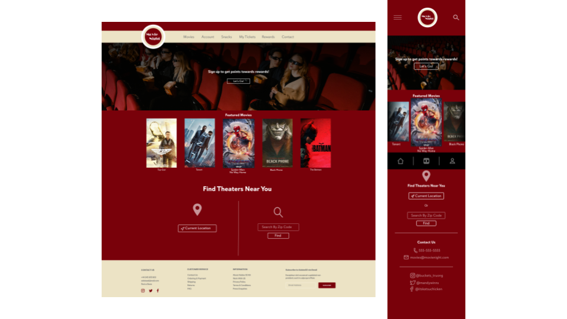
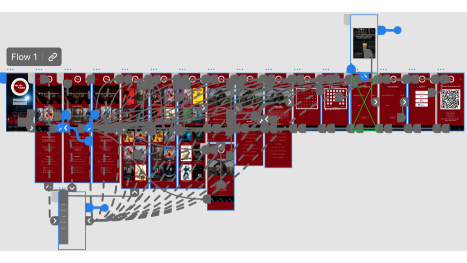

Movie Night is a mobile application made to purchase movie tickets and reserve seats at movie theaters nearby. This app allows users to search a wide range of cinemas near them for the most recent releases to purchase tickets, snacks, and drinks in advance. The idea of this app is to give users an effortless and pleasant experience when purchasing movie tickets without waiting in a long queue.
My role:
After conducting 2 interviews and 2 empathy maps, to better understand the needs their needs. A primary user group identified were people ages 22+, did not like enjoy the traditional process of purchasing movie tickets Participants that have used other sites/apps to browse vehicles have mentioned difficulty navigating through the site/app itself.
Users were frustrated at how long the queues were at the theater for purchasing both tickets and snacks.
Not Being able to add the event to the user’s calendar straight from the app.
Users say that other movie theater apps are overloaded with promos and unnecessary information. This makes it difficult to navigate.
These are a couple of MovieNight wireframes drawn out by hand. The one to the left is for web and the other for mobile.
I drew two different home pages for both web and mobile, making sure the design would be responsive for all platforms.
Below, is my low-fidelity prototype for the mobile app for MovieNight.
The user will be apart of a moderated usability study. They will be prompted to complete 3 tasks that can be done through the app, share any ideas, and provide any feedback.
The MovieNight homepage for mobile should include information other than just movies to make it responsive.
Participants want to be able to select from dates off of a calendar to easily reserve tickets.
Users wanted additional ways to pay.
Users wanted to be able to save the date in the calendar.
Based on usability studies, I made changes to the homepage. Instead of the hero being apart of the navigation, I opted to have it underneath. This way text and components are more visible and accessible to the user. I also decided to implement a carousel to show featured movies to have more space for additional information making it feel more like a home page and avoid confusion.
The second usability study revealed frustration when going to select dates to book a movie. At first I was thinking of putting dropdowns in to select the date, but realized that it would be much easier to put a calendar in. I then decided to create my own working calendar.
I included considerations for additional screen sizes in my mockup based on the wireframes from earlier because users often make purchases from different devices. In this case, a dedicated mobile app would be designed first according to studies.
The final high-fidelity prototype presented the sasme user flow. It includes all of the changes made after the usability study.
Used detailed imaages to represent the meal. To help users better understand what they are clicking on.
Tested color contrast on WebAIM and compared WCAG, making sure my color pallette is user friendly.
Used icons to help make navigation easier.